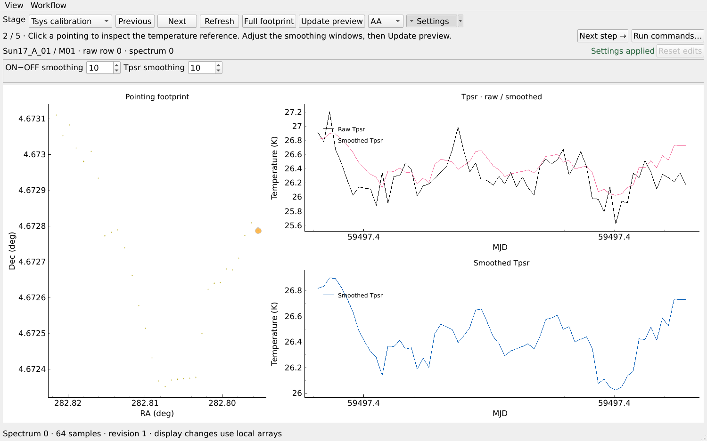
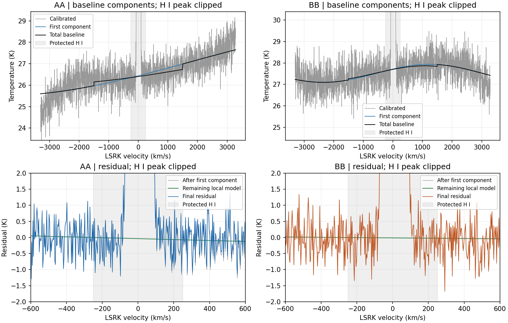
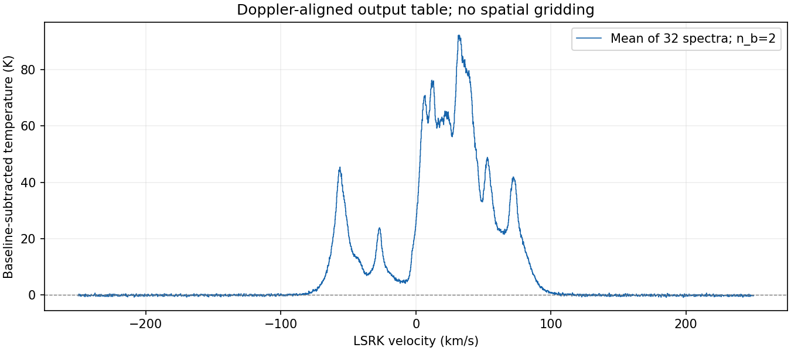
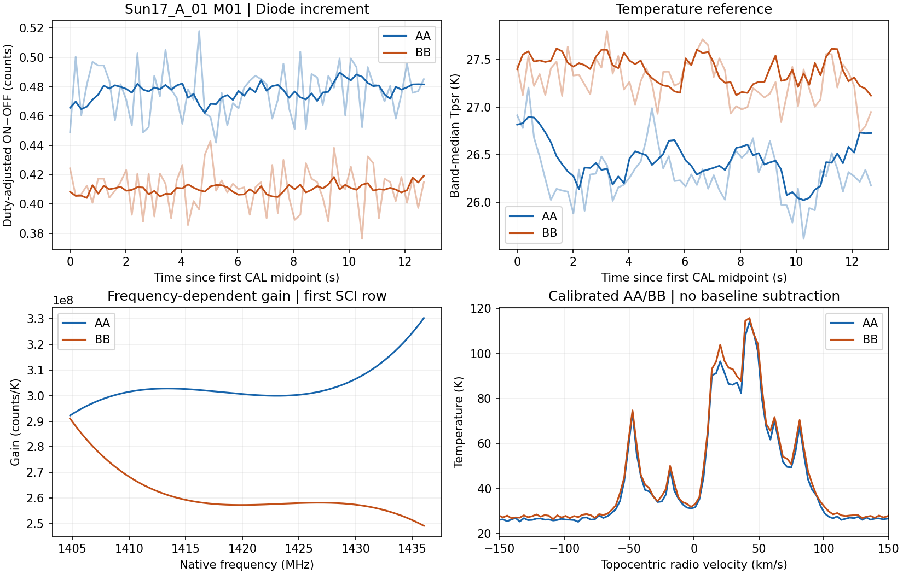

Download and unpack
Save the source archive using the download above. In the folder where you saved it:
tar -xzf fish-sun17-a01-source-20261025.tar.gz
cd fastfish-0.1.0FISH / Sun17_A_01 spectral workflow
A practical guide to the complete spectral workflow using a compact real Sun17_A_01 / M01 dataset: load inputs, calibrate, inspect RFI, fit and subtract baselines, align velocities, and save a resampled spectral table. Only spatial gridding is omitted.
The download contains the Python source, notebook, real SCI/CAL/Tcal extracts, and numerical regression results. It is a fixed teaching snapshot, not a claim that the entire pipeline is ready for general release.
01 / Know the inputs
The example contains actual Sun17_A_01 observations from 10 October 2021: M01, 32 consecutive science integrations, and both auto-polarizations. Original zero-based SCI rows 1040–1071 are retained from N_0001. The native band keeps all 65,536 channels over 31.25 MHz.
The selection contains 6.442450944 seconds of exposure. Matching ON/OFF and diode-reference extracts retain context for the two default 10-timestamp filters and the 16-frequency-channel Tcal filter.
These are observed spectra, with no simulated signal or truth array. The original files are preserved. The complete example runs through baseline subtraction and Doppler-aligned resampling. Actual saved pointings and frequency factors are included; there is no need to download full telemetry. Spatial gridding is the only omitted production stage.
science.fits · 16,796,160 bytes32 times × 65,536 channels × AA/BB; original counts and scalar metadata.
on_off.fits · 279,360 bytes64 times × OFF/ON × AA/BB × 261 channels.
tcal_reference.fits · 106,560 bytesM01, 4,197 diode-reference channels including smoothing context.
provenance.jsonOriginal basenames and slices, midpoint ranges, exact sizes, SHA256 hashes, and extraction comparison.
Data volume. The three FITS files total 17,182,080 bytes (16.39 MiB). All 19 beams of Sun17_A_01 would require 82,037,318,400 bytes of narrow-band SCI and 10,288,290,240 bytes of extracted CAL; the whole scan is unnecessary for this calibration example.
02 / Run it locally
Use a Python environment with Python ≥3.8 and a compatible scientific stack. The normal package installation includes the full pipeline dependencies; the tutorial itself uses NumPy, SciPy, Astropy, and Matplotlib. No server connection is required. The unattended workflow needs no desktop display; the Qt viewer does.
Save the source archive using the download above. In the folder where you saved it:
tar -xzf fish-sun17-a01-source-20261025.tar.gz
cd fastfish-0.1.0An isolated environment keeps this teaching snapshot separate from an existing FISH installation.
python3 -m venv .venv
source .venv/bin/activate
python -m pip install -e '.[notebook,qt]'Read the first dependency error. The full package includes cygrid, whose installation depends on your platform and available compiled dependencies. Use a compatible scientific Python environment rather than replacing your working system Python. If using a notebook, select the kernel of the environment where FISH is installed.
python examples/minimal_calibration/run_workflow.py \
--output "$HOME/fish-suna01-workflow"The runner verifies inputs and executes the normal FISH run/wait sequence for reference, calibration/RFI, baseline and resampling. Use a new empty workspace. It saves fit records, a spectral table and diagnostic figures; no gridding is started.
cd examples/minimal_calibration
jupyter notebook walkthrough.ipynbThe notebook explains each intermediate array and equation. Its final cell explicitly saves results to a temporary folder. Download the notebook separately if you already have this source snapshot and its data.
03 / Desktop interface
Use the downloaded Sun17 example to run the actual FISH desktop viewer on your own computer. The instructions below create a session with 32 real spectra and their measured sky positions; no connection to the original data server is required. The screenshots show the calibration and baseline pages.

From the unpacked fastfish-0.1.0 source directory, in the same Python environment used above:
python -m pip install -e '.[qt]'
python examples/minimal_calibration/prepare_viewer.py \
--output "$HOME/fish-suna01-viewer"
fish-viewer --session-state "$HOME/fish-suna01-viewer/fish_session.json"Run the viewer on a machine with a desktop display; a headless Linux server needs a configured desktop/display session. The preparation command requires a new empty output directory and leaves the released data unchanged. To reopen a session and retain your edits, run only the last command. In the viewer, raw rows 0–31 refer to this compact extract and correspond to original Sun17 SCI rows 1040–1071.
What this download supports. All 32 positions, midpoint times and LSRK frequency factors are real values saved from the verified Sun17 reduction. No sky coordinates are invented. The desktop viewer and complete workflow use these LSRK factors. The separate calibration-only sub-example uses topocentric frequencies. This short, one-beam extract supports saving all four spectral stages, but is unsuitable for a meaningful spatial cube. Only gridding is disabled. The full raw telemetry and full scan are not needed to run it.
After inspecting and applying settings in the viewer, open FISH in the same environment and restore that session:
fish --viewer qtrestore ~/fish-suna01-viewer/fish_session.json
tsyscal run
wait
applycal run
wait
baseline run
wait
table run
wait
statusRun the commands one stage at a time and inspect any failure before proceeding. These commands process the compact dataset itself. Run commands… copies this same sequence, ending at Table. If editing settings in the terminal while the viewer is open, refresh the viewer before making further edits. Different settings receive different stage fingerprints; previous results are retained.
Prepare a project with org_spec/, org_cal/, and matching feed_info/ telemetry, plus its appropriate Tcal reference. In FISH, select the files before calculating their footprint:
fish --viewer qtproject /path/to/your/project
file in org_spec/your_scan/your_date/*.fits
list
go where /workers 4
tsyscalInspect Tsys, Apply calibration, Baseline and Table previews, applying the settings you intend to use. Only then run the batch stages in the FISH prompt, waiting and checking each stage before continuing:
tsyscal run
wait
applycal run
wait
baseline run
wait
table run
wait
statusRun commands… copies stage commands for a full project; it does not execute them. This guide ends at the spectral table. Finite output does not establish true baseline quality or absolute calibration accuracy. Do not use a project path or Tcal reference from another observation without checking compatibility.
04 / Follow the calculation
The example calls the production calibration functions. It does not maintain a second estimator just for the tutorial. Open each step to see its meaning and code location.
D = PON − POFF20480 × 20480 + 286722
Smooth this increment along time using n_t_cal (default 10 timestamps). The original code uses ON=20480 and OFF=28672. The official FAST backend manual, Section 4 (p. 4) defines their unit as 4 ns. These settings give unequal diode durations: 81.92 μs ON and 114.688 μs OFF.
| Quantity | Calculation | Duration |
|---|---|---|
| Diode ON | 20480 × 4 ns | 81.92 μs |
| Diode OFF | 28672 × 4 ns | 114.688 μs |
| Cycle | (20480 + 28672) × 4 ns | 196.608 μs |
| PSR sample | Sun17 CAL header TBIN | 98.304 μs |
The extractor averages alternating equal-length PSR sample bins separately. With the assumed phase alignment, the ON-labelled bin receives injection for only 81.92/98.304 = 5/6 of its duration. The required multiplier is therefore tsample/tON = (20480 + 28672)/(2 × 20480) = 1.2. It is not the inverse of the ON fraction of the entire cycle.
The CRAFTS pipeline paper, Section II.1 also documents the unequal diode durations. The numerical settings here come from the original calibration code; the FAST manual establishes the units, not these observation-specific values. This explanation assumes the pulse is confined to the ON-labelled bin. Different settings or phase alignment require a corresponding timing calculation.
Production: src/fastfish/calibration/extracted.py → rebuild_reference
Tpsr = Tcal × POFF / smooth(D)
The reader smooths the diode-temperature reference over 16 frequency channels and interpolates it to the CAL grid. It retains the production float32 reference rounding. Then n_t_apply independently smooths Tpsr in time before interpolation to SCI midpoints.
The reader converts original SCI UTOBS start times to midpoints using EXPOSURE/2. CAL timestamps already denote midpoints. Time extrapolation is disabled. Smoothing Tpsr does not time-average the science spectra.
Production: rebuild_reference; time matching: scipy.interpolate.interp1d(..., bounds_error=True)
Gain anchors = overlap-averaged SCI counts / Tpsr
SCI is averaged into fully covered CAL frequency bins for comparison. A cubic log-gain is fitted independently at every time and for AA/BB, then evaluated on the native SCI grid. Anchors within ±700 km/s of H I are excluded here; this is a gain-fit exclusion, not a baseline-protection setting.
The example calls the production calibration wrapper, including its chunk-level catalogue-guided RFI search. Only observed detections become exclusions. No intervals were detected for this selected chunk at the current thresholds; this does not establish that every channel is clean.
Production: processing/preview.py → calibrate and processing/spectral.py → frequency_gain
TSCI = PSCI / Gain
The final spectrum retains native channels. Frequencies outside the CAL support remain NaN; they are not extrapolated. The measured background remains because no continuum or baseline has been removed.
Tutorial: calibrate.py → apply_reference
(time, channel, polarization); Tpsr is (time, polarization, channel). Frequencies supplied to the gain estimator are GHz, diode-file frequencies are MHz, temperature is K, and gain is counts/K.05 / RFI exclusions and baseline removal
Calibration converts backend counts to temperature; it does not remove the spectral baseline. The baseline stage fits each polarization independently, subtracts its model on native channels, and only then averages the residual polarizations.
baseline run and wait in the restored FISH session. If calibration settings changed too, complete the upstream reference/calibration stages first.
Additional baseline-only intervals can be entered in Exclude km/s. For example, the FISH syntax set baseline_exclusions_kms [[800,850]] excludes that interval from fitting; it does not identify an RFI there. Use exclusions only when justified by the observed data.
The default demonstration reports a period at its allowed search boundary in one of two processing chunks. Open Details to identify the component/polarization and compare its residual with alternatives. This is a diagnostic, not an automatic pass/fail verdict. The initial model is illustrative and is not asserted to be scientifically optimal.
Inside protected ±250 km/s, the baseline is inferred from outside anchors and the chosen function. The fit alone cannot measure its true error there. Native-channel scatter also contains radiometer noise; the plotted channel means have lower scatter and should not be confused with native noise.
06 / Doppler alignment and resampling
The Table stage uses the actual per-spectrum LSRK frequency factors bundled with the example. It aligns baseline-subtracted spectra onto a common output grid and retains one row for each selected timestamp. This is a spectral table, not a spatially gridded cube.

Replace the workspace path if you chose another output folder:
from pathlib import Path
import json
import numpy as np
root = Path.home() / "fish-suna01-workflow"
manifest = json.loads((root / "table_manifest.json").read_text())
processed = json.loads(Path(manifest["processed"]).read_text())
product = processed[0]["products"][0]
spectra = np.load(product["data"], mmap_mode="r")
frequency_ghz = np.asarray(manifest["frequency_ghz"])
print(spectra.shape) # (32, 2485) for the defaults07 / Check your answer

The compact inputs were compared with three surrounding original CAL files and the full original Tcal file. At the default smoothing settings, the effective Tpsr and all calibrated SCI values were exactly equal on the server (maximum difference 0 K). The separate calibration-only script and notebook additionally compare selected native temperatures and all gain coefficients with frozen original-input results. Small floating-point differences across platforms are allowed.
workflow_summary.jsonFour completed stages, table dimensions, residual statistics and warnings.
table_manifest.jsonSettings, output frequencies and paths to the saved spectral table.
stages/Reference arrays, gain coefficients, RFI intervals, baseline fits/reports and disk-backed resampled spectra.
The unattended runner also saves calibration.png, baseline.png and table-spectrum.png. All four stages process 32 spectra. The default table is fully finite; RFI-fraction fields remain within [0,1]. The workflow does not run spatial gridding.
Reference quality. A few nonpositive Tpsr values occur at 1420.28808594 MHz (about 0.084% of AA and 0.048% of BB reference samples). That channel is inside the excluded H I gain interval and is not used as a gain anchor. These values are reported, not changed or automatically labelled RFI.
Real-data repeatability does not establish the true astronomical spectrum or absolute calibration accuracy. The calibration diagnostic plots native frequency as topocentric velocity. The baseline plots, viewer and final spectral table use the bundled real LSRK factors. Baseline and RFI quality still require scientific assessment.
08 / Parameter changes
python examples/minimal_calibration/calibrate.py \
--output "$HOME/fish-calibration-no-smoothing" \
--n-t-cal 1 --n-t-apply 1Compare the reference curves, gain coefficients and spectra with the default result. Real references fluctuate, so changing the two filters can change the answer. The default regression comparison is skipped for non-default windows; the change is reported instead. With both filters disabled, a few nonfinite references appear at 1425.415 and 1426.514 MHz; the production fit rejects invalid anchors and the summary reports them. This does not make reference-quality checks optional.
Read rebuild_reference for the two time filters. Read frequency_gain for overlap averaging, exclusions, log fitting, clipping, and support checks. The package’s src/README.md maps the remaining modules and explains how to extend them.
The compact extract supports time-filter windows from 1 to 10. Larger windows need more surrounding CAL timestamps and must not be forced by disabling support checks. Preserve the released data and numerical reference when experimenting.
Real reductions add input convention and reference-quality checks, observed RFI detection, consistent pointing/time/Doppler calculations, configurable baseline components, spectral resampling, and spatial gridding. This compact tutorial demonstrates the spectral stages; spatial gridding and full-observation quality assessment require a larger dataset. Native channel spacing is not a measurement of the instrumental line-spread function.